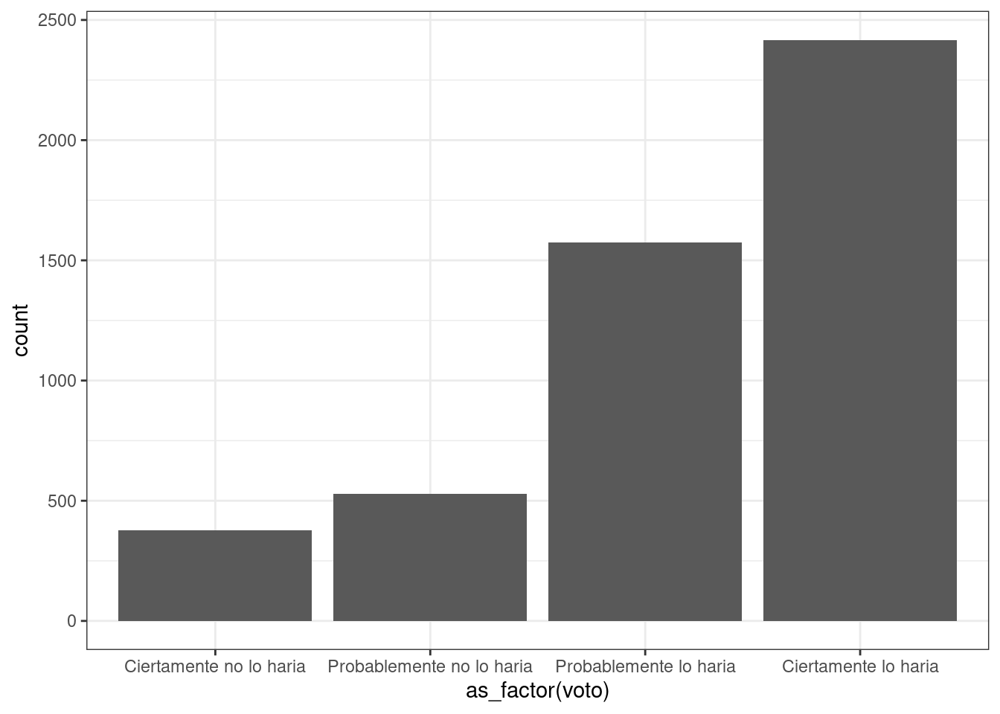

install.packages("pacman")Práctica 2.2 Organización de trabajo y operacionalización de variables
Metodología I - Magíster en Ciencias Sociales
Presentación
Objetivo de la práctica
El desarrollo de esta guía tiene por objetivo revisar algunos procedimientos básicos de la preparación de datos con R, que son necesarios para luego poder analizar e interpretar los datos.
Por temas de orden y reproducibilidad, en este curso vamos a separar en dos momentos el trabajo con datos, y dos archivos de código correspondientes:
Preparación corresponde a lo que se conoce generalmente como “limpieza”, es decir, realizar las modificaciones necesarias para poder efectuar los análisis. Estas modificaciones previas al análisis son necesarias ya que los datos originales con los que se va a trabajar en general no vienen perfectamente adaptados a los análisis que se quieren hacer. Por lo tanto, en cuanto a datos también hacemos la distinción entre datos originales y datos preparados (o procesados).
Análisis: se relaciona tanto con análisis descriptivos asociados a las preguntas de investigación y como también modelamiento de datos para contrastar hipótesis de investigación.
Los procesos de preparación y análisis vinculados a datos y resultados se presentan en el siguiente esquema:

Tanto la preparación como el análisis (que son parte del concepto más general de procesamiento) quedan registrados cada uno en un archivo de código.
Archivo de código R: archivo con extensión .R donde se almacena el código de análisis. Para generarlo desde RStudio: File > New File > R Script (o ctrl+shift+N), y para grabarlo File > Save (o ctrl+s), y darle nombre la primera vez (recordar: sin tilde ni ñ, y evitar espacios)
Proyectos, rutas, estructura de carpetas y otros
Rproject: Archivo con extensión .Rproj que permite agrupar todo tu trabajo en una carpeta que contiene todos los archivos vinculados al mismo, facilitando el manejo a través de carpetas.
Encontrando la ruta a carpeta local: lo más fácil es crear la carpeta donde se desean guardar los datos desde el administrador de archivos del computador. Luego, posicionarse con el cursor sobre la carpeta y seleccionar “Propiedades”, en la ventana emergente debería aparecer la ruta hacia la carpeta en “Ubicación”. Copiar esa ruta y agregar al final el nombre de la carpeta (separada por slash)
Sobre los “slashes” (
\o/): en la ruta las carpetas y el archivo final aparecen separados por slashes, que según el sistema utilizado pueden ser slash (/) o backslash (\). En R por defecto se usa slash, pero en Windows backslash, por lo que si se usa Windows hay que reemplazarlos por backslash o también puede ser por un doble slash (//).Por temas de compatibilidad general, en las rutas se recomienda evitar tildes, eñes, espacios, mayúsculas y guiones bajos (_).
Estructura de carpetas: para mantener el orden se sugiere seguir un protocolo de estructura de carpetas de proyecto, para lo que recomendamos el protocolo IPO, y que se adapta al flujo de trabajo presentado en la sección anterior. Básicamente son tres carpetas: input, procesamiento, output. En la carpeta input crear la subcarpeta data-orig para guardar datos originales, y data-proc para los procesados. En procesamiento se guardan los archivos de código y en output las tablas y los gráficos.
Operacionalización de variables
El documento de código de preparación posee 5 partes, más una sección de identificación inicial:
- Identificación y descripción general: Título, autor(es), fecha, información breve sobre el contenido del documento
- Librerías: cargar librerías a utilizar
- Datos: carga de datos
- Selección de variables a utilizar
- Procesamiento de variables: en este punto, por cada variable se realiza lo siguiente:
- Descriptivo básico
- Recodificación: datos perdidos y valores (en caso de ser necesario)
- Etiquetamiento: de variable y valores (en caso de ser necesario)
- Otros ajustes
- Generación de base de datos preparada para el análisis.
Al final de esta práctica la idea es que cada un_ elabore y entienda su propio documento de preparación de datos.
En el ejemplo vamos a procesar variables de formación ciudadana y variables de caracterización sociodemográfica utilizando los datos de la encuesta International Civic and Citizenship Education Study ICCS 2016 .
Antecedentes de los datos a utilizar
ICCS 2016 fue el cuarto proyecto realizado por la IEA en educación cívica, donde monitoreó las tendencias en el conocimiento y compromiso cívico durante siete años en los países que participaron en ICCS 2009.
ICCS evalúa a estudiantes de octavo grado, siempre que la edad promedio en este nivel de año sea de 13.5 años o más. En países donde la edad promedio de los estudiantes en el grado 8 era inferior a 13.5, el grado 9 se definió como la población objetivo.
El presente ejercicio tiene por objetivo procesar los datos para obtener las variables relevantes para el estudio de la Participación cívica, entendida como el grado en que los estudiantes participan en distintas instancias de toma de decisiones políticas, como la intención de voto, discusión de temas políticos y sociales o el centro de estudiantes, etc. Para ello, junto con variables de participación, consideraremos también el sexo de los estudiantes.
Preparación de datos ICCS 2016
1. Librerías principales (de R) a utilizar en el análisis
Como sabemos, la lógica de R es instalar librerías (solo 1 vez, con install.packages("librería")), y luego cargarlas cada vez que es necesario usarlas (con library(librería)). El problema de esto es que a veces no se sabe claramente qué librerías están instaladas y cuales no, lo que va a arrojar error al cargarlas. Y, como sucede en R, existe una librería para solucionar este problema que se llama pacman (package manager). Lo que hace pacman es cargar la librería, y si no está instalada, la instala y la carga:
Para utilizar la primera vez (si es que no está instalada):
Y en adelante, las librerías se cargan así pacman::p_load(libreria1,libreria2,libreriaX) :
pacman::p_load(dplyr, sjmisc, car, sjlabelled, stargazer, haven)Para esta sesión vamos a utilizar Las librerías que vamos a utilizar son:
dplyr: ajuste general de datossjmisc: descripción y exploración de base de datoscar: principalmente la funciónrecodepara recodificar/agrupar valores de variablestargazer: para tabla descriptivahaven: Cargar y exportar bases de datos
2. Cargar base de datos
Ajustar espacio de trabajo
Previo a la carga de nuestra base de datos, se recomienda ejecutar los siguientes comandos:
rm(list=ls()) # borrar todos los objetos en el espacio de trabajo
options(scipen=999) # valores sin notación científicaLa función rm(list=ls()) permite comenzar con un espacio de trabajo (environment) vacío y sin otros objetos. Así también, la función options(scipen=999) desactiva la notación científica, es decir, veremos los valores numéricos con todos sus decimales.
Datos
Las bases de datos se pueden cargar de un archivo local o en línea. Para este caso utilizaremos un archivo local en formato .sav: Abrir bases de datos en otros formatos: Los formatos mas comunes en que se almacenan las bases de datos son .dta (Stata), .sav (Spss) y RData (R). Para abrir desde R utlilizamos la librería haven y sus funciones read_dta y read_sav según corresponda. Ej: datos <- read_dta("base_casen.dta"). Recordar antes instalar/cargar la librería: pacman::p_load(haven)
iccs <- read_sav("input/data/original/ISGCHLC3.sav", encoding = "UTF-8")La base de datos aparece como un objeto en nuestro espacio de trabajo, con el nombre original con la que fue guardada (iccs):
Realizamos un chequeo básico de la lectura de datos: nombres de las variables y tamaño de la base en términos de casos y variables (en este ejemplo, 5081 casos y 351 variables).
dim(iccs) # dimension de la base[1] 5081 351Y si se quiere revisar en formato de planilla de datos:
View(iccs)3. Selección de variables a utilizar
Este paso consiste en crear un subset reducido de datos que contenga solo las variables de interés. Para ello:
- Se identifica el nombre de las variables que registran la información de preguntas o items del instrumento: esto aparece en el libro de códigos y/o en el cuestionario, o también se puede hacer buscando en la base de datos mediante alguna palabra clave asociada a la pregunta. Por ejemplo, si queremos buscar variables asociadas a educación, utilizamos la función
find_var(desjmisc, librería que cargamos en el paso 1), que nos entrega nombre de la variable en columna var.name. Por ejemplo, si buscamos alguna variable asociada al concepto votar:
find_var(data = iccs,"Vote") col.nr var.name
1 179 IS3G31A
2 180 IS3G31B
3 189 IS3G31K
4 190 IS3G31L
5 191 IS3G32A
var.label
1 Participating in Society/When an adult, what do you think you will do/Vote in <local elections>
2 Participating in Society/When an adult, what do you think you will do/Vote in <national elections>
3 Participating in Society/When an adult, what do you think you will do/Vote in <state, province elections>
4 Participating in Society/When an adult, what do you think you will do/Vote in European elections
5 Participating in Society/How likely participate/Vote school election of <class representatives> or <school parliament>Nos informa que hay una serie de variables relacionadas con votar.
Mediante la función select de dplyr, seleccionamos cada una de nuestras variables de interés y creamos una nueva base con el nombre proc_data, donde “proc” hace referencia a base procesada:
proc_data <- iccs %>% select(IS3G31B, # Intención de Voto en elecciones nacionales
IS3G31E, # Intención de unirse a un partido político
IS3G31G, # Intencion candidato en elecciones locales
S_GENDER) # genero
# Comprobar
names(proc_data)[1] "IS3G31B" "IS3G31E" "IS3G31G" "S_GENDER"Mediante el comando get_label obtenemos el atributo label de las variables.
sjlabelled::get_label(proc_data) IS3G31B
"Participating in Society/When an adult, what do you think you will do/Vote in <national elections>"
IS3G31E
"Participating in Society/When an adult, what do you think you will do/Join a political party"
IS3G31G
"Participating in Society/When an adult, what do you think you will do/Stand as a candidate in <local elections>"
S_GENDER
"Student gender" Podemos ver que son largas o con códigos poco informativos, por lo tanto, es necesario cambiarlas por etiquetas más cortas y de fácil identificación.
4. Procesamiento de variables
Para el procesamiento de cada variable se seguirá el siguiente flujo de trabajo:
- Descriptivo general
- Recodificación: de casos perdidos y otros valores (en caso necesario)
- Etiquetado: cambio de nombres de variables y valores (en caso necesario)
- Otros ajustes
Y se recomienda también un descriptivo final para revisar que el procesamiento de cada variable está ok.
4.1 Intención de participación
En Latinobarómetro, lass variables que permiten medir la Confianza en instituciones políticas en Chile son las siguientes:
a. Descriptivo
Para los descriptivos se utilizará la función frq, de la librería sjmisc:
frq(proc_data$IS3G31B)Participating in Society/When an adult, what do you think you will do/Vote in <national elections> (x) <numeric>
# total N=5081 valid N=4944 mean=1.77 sd=0.92
Value | Label | N | Raw % | Valid % | Cum. %
-----------------------------------------------------------------------
1 | I would certainly do this | 2441 | 48.04 | 49.37 | 49.37
2 | I would probably do this | 1589 | 31.27 | 32.14 | 81.51
3 | I would probably not do this | 534 | 10.51 | 10.80 | 92.31
4 | I would certainly not do this | 380 | 7.48 | 7.69 | 100.00
7 | Invalid | 0 | 0.00 | 0.00 | 100.00
8 | Not administered | 0 | 0.00 | 0.00 | 100.00
9 | Omitted | 0 | 0.00 | 0.00 | 100.00
<NA> | <NA> | 137 | 2.70 | <NA> | <NA>En esta variable vemos valores asociados a la opción “invalid” (7), “Not administered” (8) y “ommited” (9), que corresponde definirlos como casos perdidos (en el caso de R, como casos NA), pero vienen recodificados como NA en la base (hay 137 NA). El resto de los valores y etiquetas se encuentran en un orden contraintuitivo (mayor valor indica menos intención de voto), así que en la recodificiación nos haremos cargo de reordenar las categorías.
b. Recodificación
Para reordenar las categorías volvemos a utilizar la función recode, de la librería car
proc_data$IS3G31B <- recode(proc_data$IS3G31B, "1=4; 2=3; 3=2; 4=1")
proc_data$IS3G31E <- recode(proc_data$IS3G31E, "1=4; 2=3; 3=2; 4=1")
proc_data$IS3G31G <- recode(proc_data$IS3G31G, "1=4; 2=3; 3=2; 4=1")c - Etiquetado
Vamos a dar un nombre más sustantivo a las variables con la función rename, de la librería dplyr:
proc_data <- proc_data %>% rename("voto"=IS3G31B, # Intencion de voto
"candidato"=IS3G31E, # Intencion de ser candidato
"partido"=IS3G31G) # Intencion de unirse a partido politicoAdemás de cambiar el nombre, queremos cambiar las etiquetas de las variables.
get_label(proc_data$voto)[1] "Participating in Society/When an adult, what do you think you will do/Vote in <national elections>"proc_data$voto <- set_label(x = proc_data$voto,label = "Intencion de voto")
get_label(proc_data$candidato)[1] "Participating in Society/When an adult, what do you think you will do/Join a political party"proc_data$candidato <- set_label(x = proc_data$candidato, label = "Intencion de ser candidato")
get_label(proc_data$partido)[1] "Participating in Society/When an adult, what do you think you will do/Stand as a candidate in <local elections>"proc_data$partido <- set_label(x = proc_data$partido, label = "Intencion de unirse a partido politico")d. Otros ajustes
Para este caso vamos a crear una variable que sea el promedio de los tres items de intención de participación
proc_data <- proc_data %>% rowwise() %>% mutate(int_part = mean(c(voto, candidato, partido), na.rm = T))
summary(proc_data$int_part) Min. 1st Qu. Median Mean 3rd Qu. Max. NA's
1.000 2.000 2.333 2.428 3.000 4.000 125 get_label(proc_data$int_part)NULLVemos que no tiene etiqueta.
proc_data$int_part <- set_label(x = proc_data$int_part, label = "Intención de participación")Revisión final
Nuevamente un descriptivo de cada variable para confirmar que el procesamiento está ok:
frq(proc_data$voto)Intencion de voto (x) <numeric>
# total N=5081 valid N=4944 mean=3.23 sd=0.92
Value | Label | N | Raw % | Valid % | Cum. %
-----------------------------------------------------------------------
1 | I would certainly do this | 380 | 7.48 | 7.69 | 7.69
2 | I would probably do this | 534 | 10.51 | 10.80 | 18.49
3 | I would probably not do this | 1589 | 31.27 | 32.14 | 50.63
4 | I would certainly not do this | 2441 | 48.04 | 49.37 | 100.00
7 | Invalid | 0 | 0.00 | 0.00 | 100.00
8 | Not administered | 0 | 0.00 | 0.00 | 100.00
9 | Omitted | 0 | 0.00 | 0.00 | 100.00
<NA> | <NA> | 137 | 2.70 | <NA> | <NA>frq(proc_data$candidato)Intencion de ser candidato (x) <numeric>
# total N=5081 valid N=4922 mean=2.07 sd=0.93
Value | Label | N | Raw % | Valid % | Cum. %
-----------------------------------------------------------------------
1 | I would certainly do this | 1479 | 29.11 | 30.05 | 30.05
2 | I would probably do this | 2102 | 41.37 | 42.71 | 72.75
3 | I would probably not do this | 859 | 16.91 | 17.45 | 90.21
4 | I would certainly not do this | 482 | 9.49 | 9.79 | 100.00
7 | Invalid | 0 | 0.00 | 0.00 | 100.00
8 | Not administered | 0 | 0.00 | 0.00 | 100.00
9 | Omitted | 0 | 0.00 | 0.00 | 100.00
<NA> | <NA> | 159 | 3.13 | <NA> | <NA>frq(proc_data$partido)Intencion de unirse a partido politico (x) <numeric>
# total N=5081 valid N=4939 mean=1.98 sd=0.93
Value | Label | N | Raw % | Valid % | Cum. %
-----------------------------------------------------------------------
1 | I would certainly do this | 1741 | 34.26 | 35.25 | 35.25
2 | I would probably do this | 2015 | 39.66 | 40.80 | 76.05
3 | I would probably not do this | 739 | 14.54 | 14.96 | 91.01
4 | I would certainly not do this | 444 | 8.74 | 8.99 | 100.00
7 | Invalid | 0 | 0.00 | 0.00 | 100.00
8 | Not administered | 0 | 0.00 | 0.00 | 100.00
9 | Omitted | 0 | 0.00 | 0.00 | 100.00
<NA> | <NA> | 142 | 2.79 | <NA> | <NA>Vemos que los valores (labels) de cada categoría de las primeras variables que recodificamos no se corresponden con el nuevo valor. Para re-etiquetar valores usamos la función set_labels, de la librería sjlabelled. Aprovechamos también de pasarlas a español
proc_data$voto <- set_labels(proc_data$voto,
labels=c( "Ciertamente no lo haria"=1,
"Probablemente no lo haria"=2,
"Probablemente lo haria"=3,
"Ciertamente lo haria"=4))
proc_data$candidato <- set_labels(proc_data$candidato,
labels=c( "Ciertamente no lo haria"=1,
"Probablemente no lo haria"=2,
"Probablemente lo haria"=3,
"Ciertamente lo haria"=4))
proc_data$partido <- set_labels(proc_data$partido,
labels=c( "Ciertamente no lo haria"=1,
"Probablemente no lo haria"=2,
"Probablemente lo haria"=3,
"Ciertamente lo haria"=4))y volvemos a revisar
frq(proc_data$voto)Intencion de voto (x) <numeric>
# total N=5081 valid N=4944 mean=3.23 sd=0.92
Value | Label | N | Raw % | Valid % | Cum. %
-------------------------------------------------------------------
1 | Ciertamente no lo haria | 380 | 7.48 | 7.69 | 7.69
2 | Probablemente no lo haria | 534 | 10.51 | 10.80 | 18.49
3 | Probablemente lo haria | 1589 | 31.27 | 32.14 | 50.63
4 | Ciertamente lo haria | 2441 | 48.04 | 49.37 | 100.00
<NA> | <NA> | 137 | 2.70 | <NA> | <NA>frq(proc_data$partido)Intencion de unirse a partido politico (x) <numeric>
# total N=5081 valid N=4939 mean=1.98 sd=0.93
Value | Label | N | Raw % | Valid % | Cum. %
-------------------------------------------------------------------
1 | Ciertamente no lo haria | 1741 | 34.26 | 35.25 | 35.25
2 | Probablemente no lo haria | 2015 | 39.66 | 40.80 | 76.05
3 | Probablemente lo haria | 739 | 14.54 | 14.96 | 91.01
4 | Ciertamente lo haria | 444 | 8.74 | 8.99 | 100.00
<NA> | <NA> | 142 | 2.79 | <NA> | <NA>4.2. Sexo
- [
S_GENDER] = Sexo
a. Descriptivo
frq(proc_data$S_GENDER)Student gender (x) <numeric>
# total N=5081 valid N=5081 mean=0.49 sd=0.50
Value | Label | N | Raw % | Valid % | Cum. %
----------------------------------------------------------
0 | Boy | 2577 | 50.72 | 50.72 | 50.72
1 | Girl | 2504 | 49.28 | 49.28 | 100.00
7 | Invalid | 0 | 0.00 | 0.00 | 100.00
8 | Not administered | 0 | 0.00 | 0.00 | 100.00
9 | Omitted | 0 | 0.00 | 0.00 | 100.00
<NA> | <NA> | 0 | 0.00 | <NA> | <NA>b. Recodificación
Esta variable generalmente no tiene problemas de etiquetado, viene también con niños=0 y niñas=1
c. Etiquetado
Cambio de nombre de la variable
proc_data <- proc_data %>% rename("sexo"=S_GENDER)Podemos pasar las categorías a español:
proc_data$sexo <- set_labels(proc_data$sexo,
labels=c( "Ninios"=0,
"Ninias"=1))También queremos cambiar la etiqueta de la variable.
get_label(proc_data$sexo)[1] "Student gender"proc_data$sexo <- set_label(x = proc_data$sexo,label = "Sexo")Revisar con un nuevo descriptivo:
frq(proc_data$sexo)Sexo (x) <numeric>
# total N=5081 valid N=5081 mean=0.49 sd=0.50
Value | Label | N | Raw % | Valid % | Cum. %
------------------------------------------------
0 | Ninios | 2577 | 50.72 | 50.72 | 50.72
1 | Ninias | 2504 | 49.28 | 49.28 | 100.00
<NA> | <NA> | 0 | 0.00 | <NA> | <NA>5. Generación de base de datos procesada para el análisis
Antes de guardar la base procesada, revisamos nuevamente todas las variables con una tabla descriptiva general mediante la función stargazer (de la librería homónima)
Primero vamos a reformatear el objeto proc_data como base de datos (as.data.frame), paso necesario para que sea reconocido como tal por stargazer
proc_data <-as.data.frame(proc_data)
stargazer(proc_data, type="text")
==========================================
Statistic N Mean St. Dev. Min Max
------------------------------------------
voto 4,944 3.232 0.925 1 4
candidato 4,922 2.070 0.928 1 4
partido 4,939 1.977 0.928 1 4
sexo 5,081 0.493 0.500 0 1
int_part 4,956 2.428 0.726 1.000 4.000
------------------------------------------Si se desea modificar las columnas que aparecen en la tabla se puede ocupar la opción summary.stat, donde se pueden especificar:
- “max” maximum
- “mean” mean
- “median” median
- “min” minimum
- “n” number of observations
- “p25” 25th percentile
- “p75” 75th percentile
- “sd” standard deviation
Por ejemplo, si quiero una tabla solo con promedio, n, sd y p75: stargazer(data, type="text", summary.stat = c("mean", "n", "sd", "p75"))
- Guardar base de datos procesada: en carpeta local La ruta hacia su carpeta local si está trabajando en windows debería ser algo como “C:/Users/Lenovo/Clases/y aquí nombre del archivo a grabar
El comando para guardar es save. En este caso, seguimos una estructura de carpetas de datos, separando en una carpeta los datos originales, y en otra (proc) los datos procesados:
save(proc_data,file = "input/data/proc/iccs_proc.RData")Descriptivos básicos de las variables
Podemos conocer ciertas medidas de tendencia central utilizando algunas funciones de dplyr
Media por grupos
proc_data %>% dplyr::group_by(sexo) %>% summarise(mean(int_part, na.rm=TRUE))# A tibble: 2 × 2
sexo `mean(int_part, na.rm = TRUE)`
<dbl+lbl> <dbl>
1 0 [Ninios] 2.46
2 1 [Ninias] 2.40Representación
library(ggplot2)
Attaching package: 'ggplot2'The following object is masked from 'package:sjlabelled':
as_labelproc_data %>% na.omit() %>%
ggplot(aes(x=as_factor(voto))) +
geom_bar()+
theme_bw()